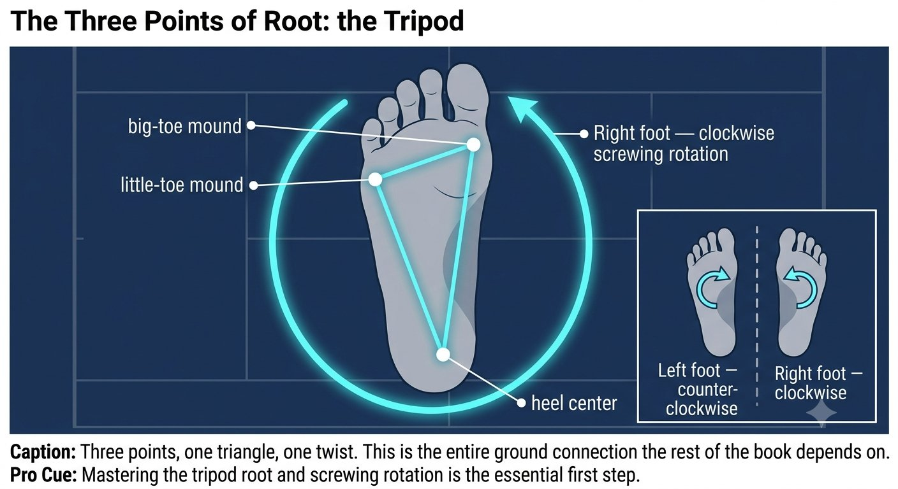
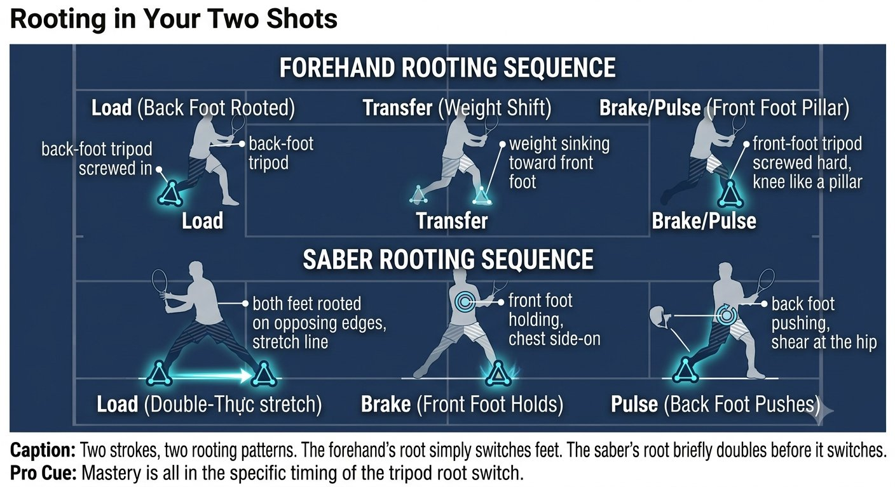

Chapter 18: Rooting¶
CHAPTER 18

Figure 1
ROOTING¶
The Ground Connection (Root)
Without root, there's no tensegrity, no SSC, no braking, no one-inch pulse. All the upper-body work collapses.
Root is the ability to send force into the ground and get it back. It's not muscular pushing — it's structural alignment plus fascial tension, so ground reaction force travels upward.
— Henry Pham
What Rooting Actually Is¶
Tennis is a constant cycle of losing and regaining root:
– Moving: root stays light and dynamic, VOR on.
– Planting to hit: root goes deep, instantly, VOR quiet, brake ready.
– After the hit: root goes light again to recover.
A deep root is tripod, plus arch, plus spiral tension.
The Three Points of Root: the Tripod¶
The foot has three points: the big-toe mound, the little-toe mound, and the center of the heel.
The feel is like the foot screwing into the ground clockwise for the right foot, counter-clockwise for the left. Screw — don't stomp.
Figure 18.1: The tripod is three points — big toe, little toe, heel — actively lifting at the arch. Screw the right foot clockwise, the left counter-clockwise. No screw means no spiral tension.

Figure 2
Test it: can someone push your chest lightly while you're in your hitting stance without you moving? If yes, you're rooted. If you step back, you're not.
Rooting in Your Two Shots¶
Forehand Push: Back-Foot Root Into Front-Foot Brake Root
-
Load: the back foot's tripod screws in, the inside arch lifts, and you feel the adductor and oblique tighten — that spiral-line tension. This is the root that loads the SSC.
-
Transfer: the weight shifts, but never by stepping heavy — by releasing the back root slightly and sinking into the front foot's tripod.
-
Brake and pulse: the front foot's tripod screws hard into the ground and stops. The knee extends but never locks — like a pillar. This hard front root is what creates the brake and sends the impulse up the 45-degree glass. Without the front root, the brake is purely muscular and you just slide.
Saber Backhand: Front-Foot Root Plus Back-Leg Anchor
The backhand needs an even deeper root, because you're side-on and more off-balance to begin with.
-
Load: the back foot roots on its outside edge, the front foot on its inside edge — you feel a stretch between the feet, like tearing paper apart with them. This stretches the back-line fascia between the legs.
-
Brake: the front foot's root holds the side-on position. The chest can't open because the front root is holding the hip. Open the chest early and the root has already broken.
-
Pulse: the back foot pushes into the ground while the front foot holds — creating the shear that snaps the lat.
Figure 18.2: Two strokes, two rooting patterns. The forehand's root simply switches feet. The saber's root briefly doubles before it switches.

Figure 3
Dynamic Rooting: Staying Stable While Moving¶
There's no time to set a root slowly. What you need is an instant root.
– Small adjustment steps are root scanning — each small step re-establishes the tripod quickly.
– The last two steps have to be short and low, with the feet wider than the hips — this drops the center of gravity and widens the base for an instant root.
– The key: a still head plus Quiet Eye is what allows a deep root. Move the head and the vestibular system won't let you root deep — it keeps the muscles co-contracted to protect you from falling. A still head tells the nervous system it's safe to root hard.
So the order runs: a still head, then a quiet VOR, then proprioception feeling the tripod, then fascia screwing in, then a deep root, then the brake, then the pulse.
Training Root: Two Minutes Before You Hit¶
-
Screw drill (30 seconds per foot): barefoot, in a tripod stance, screw the foot into the ground without shifting its position. Feel the arch lift and the calf, adductor, and oblique fire automatically — no muscle squeezing, just the screw.
-
Push test: a partner pushes your shoulder lightly while you're in a forehand stance with the tripod engaged. You should feel the push travel into the front foot and into the ground, never into the lower back. A tight lower back means the root was lost.
Figure 18.3: If the push travels down into the ground and you dont move, youre rooted. If it travels into your lower back and you step back, youre not -- no matter how solid your stance looks standing still.

Figure 4
- Silent landing: split step and land without any sound. Silent means the tripod absorbed it elastically. Loud means the heel slammed down — no root at all.
Why the Tripod Matters¶
Figure 18.4: Same tripod, three different outcomes. Only the middle percentages — spread correctly and lifted at the arch — actually build spiral tension instead of leaking it.

Figure 5
The Complete System, From the Ground Up¶
Root comes first — it was never last.
-
Root: the tripod screws in, the ground connection forms.
-
V: the head stays still, VOR goes quiet.
-
Q: the eyes park on the contact zone.
-
F: spiral or back-line tension runs from root to hand.
-
P: ting jin feels the stretch.
-
T: tensegrity holds the structure together.
-
SSC: the stretch crosses over fast — under 0.2 seconds.
-
8: the figure-8 stays continuous, its size regulating power.
-
45°: the plane of the 8 is the 45-degree glass.
-
Brake: the front leg or core stops hard.
-
Pulse: a one-inch fa jin travels through the ball.
-
Jin: ting feels, hua transforms, fa releases.
Figure 18.5: Twelve layers, one foundation. Root was never the last thing this book talked about because it was never the last thing that happens — it's what everything above it stands on.
The Rule
Root comes first, not last. All the upper-body work collapses without it.
The Rooting Checklist¶
SCREW THE FEET TO ROOT. HEAD STILL. EYES PARKED. SMALL 8 ON THE 45° GLASS. BRAKE. PULSE.
– Tripod active: big toe, little toe, heel — the arch lifting.
– The back foot screws in on the load; the front foot screws hard on the brake.
– The head stays still from the bounce through the contact hold.
– The eyes jump to the contact zone at the bounce and lock there.
– Feel the spiral or back-line stretch from foot to hand.
– No pause at the top of the loop — the 8 stays continuous.
– The front leg or hip brakes hard — the impulse travels up the 45-degree glass.
– A one-inch pulse through the ball, never a long follow-through.
– Feel it as: ting (the stretch), then hua (the absorb), then fa (the snap).
Where This Leads
This chapter establishes root as the variable in Q-V-ROOT-8-45-Impulse-Jin CORE. Chapter 19 covers the forehand push system. Chapter 20 covers the one-handed backhand saber. Chapter 21 covers the two-handed backhand hybrid.
←Previous ChapterChapter 17: Hu Thuc FootworkNext ChapterChapter 19: Forehand Push System→